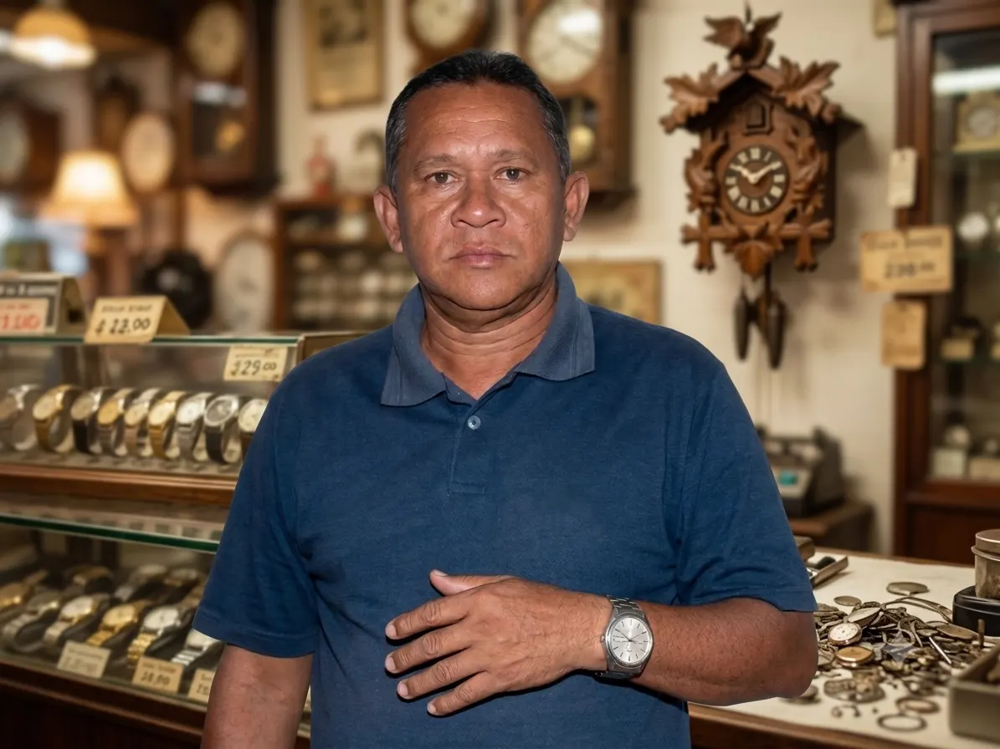
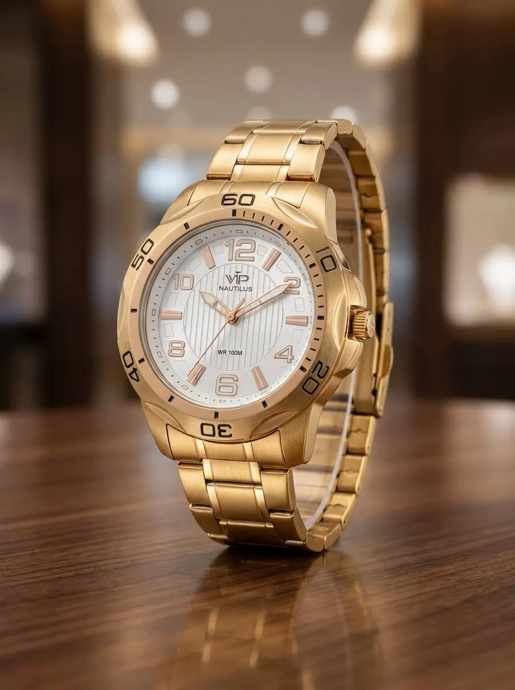
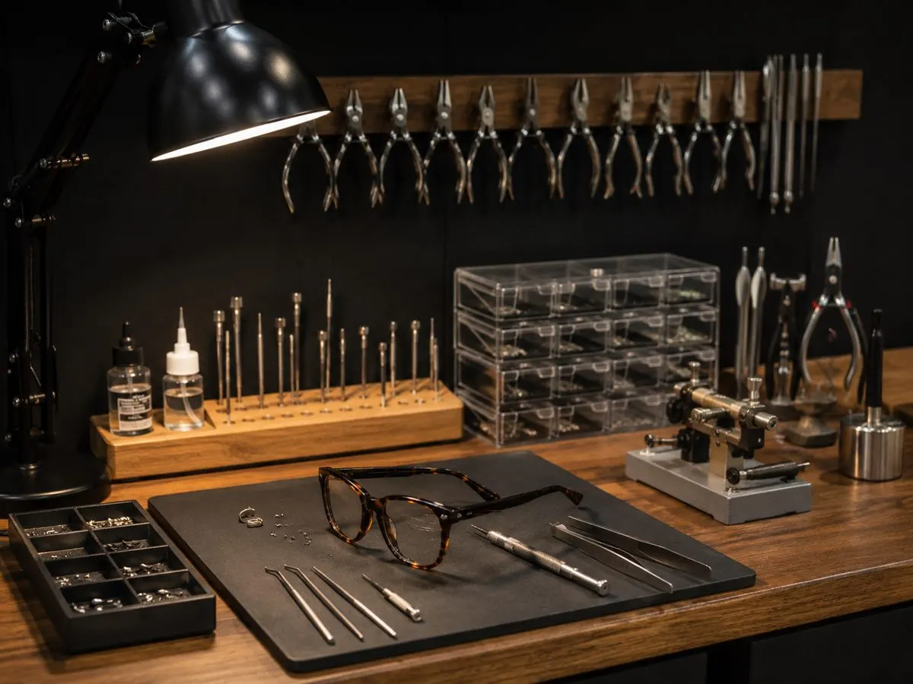
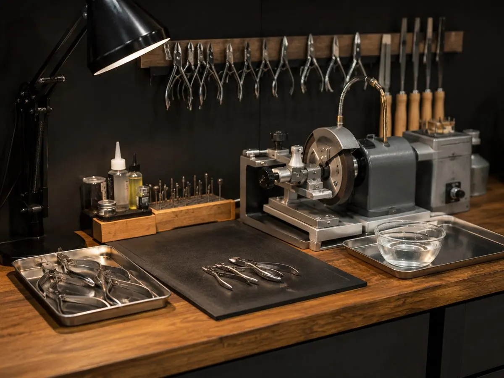
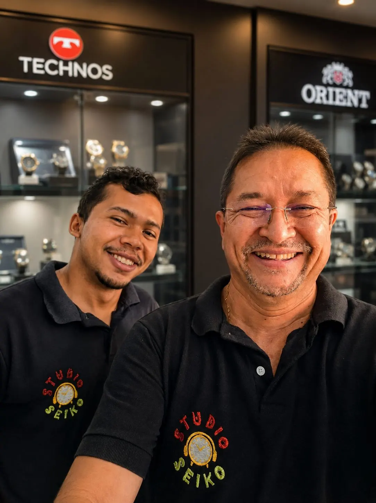

Cururupu · Maranhão · Desde os anos 80
Studio Seiko
O cuidado com o tempo,
de geração em geração.
Relógios originais e serviços especializados no centro de Cururupu — com a precisão e a confiança de uma história familiar.
- Relógios originais
- Assistência técnica
- Conserto de óculos
- Solda de joias

Quem somos
Nossa História
A história do Studio Seiko começou muito antes do nome existir.
- 1980 Início da Relojoaria Seiko com João Souza
- 2003 Legado familiar continua vivo
- Hoje Studio Seiko: tradição e novos serviços
Tudo teve início na década de 1980, quando João Souza deixou o estado de Goiás e chegou a Cururupu, no Maranhão, trazendo consigo o conhecimento, a dedicação e a paixão pela profissão de relojoeiro. Foi assim que nasceu a tradicional Relojoaria Seiko.
Durante muitos anos, a relojoaria se tornou referência em Cururupu e região, conquistando a confiança de gerações de clientes que buscavam qualidade, precisão e serviços especializados.
Em 2003, a família enfrentou um momento muito difícil com o falecimento de João Souza em um acidente de trânsito. Mas o legado deixado por ele continuou vivo através dos ensinamentos transmitidos ao longo dos anos.
Antes mesmo desse período, eu já trabalhava no ramo de gravações, produzindo vinhetas para DJs, gravando músicas em fitas cassete (K7) e CDs, acompanhando a evolução da tecnologia e das necessidades dos clientes. Com o passar do tempo, percebi que poderia unir duas paixões: a relojoaria que aprendi com meu pai e o universo do áudio e da gravação.
Foi dessa união que nasceu o Studio Seiko. Mais do que uma simples mudança de nome, representa a evolução de uma história construída com dedicação, inovação e compromisso com a comunidade.
Hoje, o Studio Seiko reúne venda de relógios originais, assistência técnica especializada, conserto de óculos, afiação profissional de alicates, solda de joias e semijoias, além de gravações para clientes, DJs, empresas e eventos.
Nossa missão continua sendo a mesma desde os tempos da antiga Relojoaria Seiko: oferecer produtos de qualidade, serviços confiáveis e um atendimento diferenciado, honesto e dedicado.
“Tradição, confiança e inovação há décadas fazendo parte da história de nossos clientes.”
Relógios originais
O relógio certo para cada momento
No Studio Seiko você encontra relógios masculinos e femininos originais das melhores marcas, com opções elegantes, modernas e resistentes para todos os estilos.

Veja modelos e preços com a nossa equipe.
Atendimento rápido pelo WhatsAppSoluções em um só lugar
Serviços feitos com cuidado e precisão
Do relógio que marcou sua história ao serviço que facilita seu dia, tratamos cada atendimento com atenção e responsabilidade.
Assistência técnica especializada
Troca de baterias, vidros, pinos, pulseiras e ajustes.
Conhecer o serviço Enviar foto para orçamento
Conserto de óculos
Reparos cuidadosos para recuperar o uso e o conforto.
Conhecer o serviço Enviar foto do óculos
Afiação de alicates
Afiação profissional para alicates de unha.
Conhecer o serviço Consultar prazo e valorSolda de joias e semijoias
Cuidado e acabamento para peças especiais.
Conhecer o serviço Solicitar solda da peçaÁudio e gravação
Músicas, vinhetas e comerciais
Gravação de músicas para pendrive, produção de vinhetas para DJs e comerciais para lojas e eventos.
Atendimento fácil
Como funciona
Simples, rápido e sem burocracia — do primeiro contato à resolução do serviço.
-
Chame no WhatsApp
Envie uma foto da peça ou explique o que precisa. Atendimento inicial sem compromisso.
-
Receba a orientação
Informamos valor aproximado, prazo e a melhor solução para o seu caso.
-
Traga à loja ou retire
Atendimento no centro de Cururupu, com a confiança de décadas de tradição.
Por dentro do Studio
Produtos, cuidado e trabalho real
Conheça um pouco da nossa loja, dos relógios e dos serviços realizados no centro de Cururupu.
Avaliações no Google
Clientes que confiam no Studio Seiko
Selecionamos avaliações 5 estrelas publicadas no Google. Textos reais de quem já foi atendido na loja.
“Ótimo atendimento, serviço excelente e lindos relógios. Gostei bastante! Recomendo!”
“Qualidade de Atendimento, impecável!”
“Ótimo!”
“Muito boa”
Dúvidas frequentes
Perguntas frequentes
Respostas diretas para facilitar seu atendimento no Studio Seiko, em Cururupu.
Sim. No Studio Seiko trabalhamos com troca de baterias, ajustes e pequenos reparos, com atendimento rápido. Chame no WhatsApp para combinar.
Sim. Você pode enviar uma foto para avaliação inicial e orientações sobre o serviço. O diagnóstico definitivo pode exigir a análise da peça na loja.
Sim. Trabalhamos com marcas reconhecidas como Orient, Technos, Casio, Lince, Champion, Invicta, VIP e outras. Consulte modelos e preços pelo WhatsApp.
O prazo depende do tipo de serviço e da peça. Nossa equipe informa a previsão após a avaliação — em muitos casos, orientamos logo no primeiro contato.
Sim. Fazemos reparos em armações para devolver conforto e funcionalidade. Envie uma foto pelo WhatsApp para uma primeira orientação.
Sim. Realizamos afiação profissional para alicates de uso pessoal e profissional. Pergunte prazo e valor pelo WhatsApp.
Sim. Gravamos músicas para pendrive, produzimos vinhetas para DJs e comerciais para lojas e eventos em Cururupu e região.
De segunda a sexta, das 7h30 às 12h e das 14h às 18h. Aos sábados, das 7h30 às 13h. Estamos no centro de Cururupu.
Aceitamos Pix, dinheiro e cartões. No atendimento, nossa equipe confirma a melhor forma para o seu serviço ou compra.
Confiança construída no balcão
Uma história passada de geração em geração
O Studio Seiko cresceu com o atendimento próximo, o trabalho honesto e o cuidado dedicado a cada cliente. É assim que honramos o legado de João Souza e seguimos fazendo parte da rotina de Cururupu.

Estamos no centro de Cururupu
Venha conhecer o Studio Seiko
Fale com nossa equipe ou visite a loja. Será um prazer atender você.
EndereçoRua Dom Pedro 2º, CentroCururupu · MA
Sábado: 7h30–13h